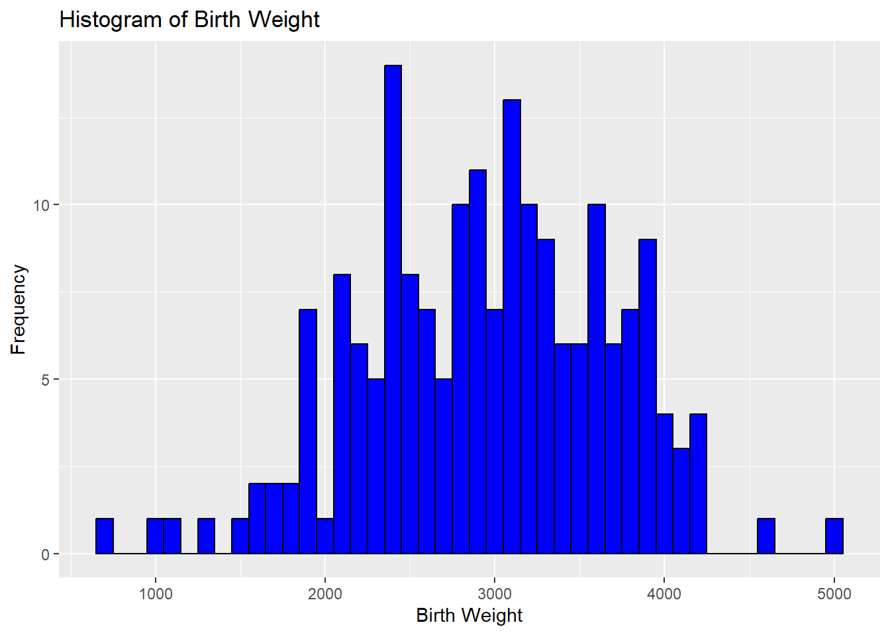

Quarto
This exercise is designed to introduce you to the basics of using Quarto documents in RStudio. You will practice creating and formatting text, using headings, inserting tables and images, and writing R code within Quarto documents. By completing this exercise, you will gain practical experience in document creation, code integration, and data visualization using Quarto, which is a valuable skill for producing professional reports and presentations.
Question 1: Open a New Quarto Document
- Open a new Quarto document in RStudio and save it as
my_first_quarto.qmdin a folder namedreportwithin your R project.
Question 2: Practice Text Formatting
Write the following sentence in different formats:
- Plain Text:
This is my first line in Quarto. - Italics: This is my second line in Quarto.
- Bold: This is my third line in Quarto.
- Bold and Italics: This is my fourth line in Quarto.
- Plain Text:
Question 3: Create Different Levels of Headings
Add the following headings and provide a brief description after each:
# Introduction- Describe the purpose of your document.
## Background- Provide some context or background information.
## Objective- State the main objective of this exercise.
# Data and Methods- Explain the type of data used and the methods for analysis.
## Data- Give a brief overview of the dataset (e.g., source, variables included).
Question 4: Insert a Table
- Create a table with three columns (
Variable,Description,Type) and four rows.
| Variable | Description | Type |
|---|---|---|
| age | Age of the mother | Numeric |
| race | Race of the mother | Categorical |
| smoke | Smoking status | Binary |
| bwt | Birth weight of the baby | Numeric |
Question 5: Insert an Image
- Insert an image named
plot.pngfrom theplotsfolder.
Question 6: Insert a Reference
- Add a citation using the Quarto .
Question 8: Show Code Without Execution
- Display the following R code in your document, but do not run it.
df |> names()Question 9: Display a Histogram Without Code
- Create a histogram of the
bwt(birth weight) variable, but only show the graph in the output.

Question 10: Write Inline Code
- Display the mean birth weight of babies inline using R code.
The mean birth weight of babies is 2944.5873016 grams.